Hand Lettering Calligraphy
Hand-Lettering is a more planned or designed approach letterform design. Every detail is carefully considered, especially
concerning content. Style-wise, it may be based on calligraphy, but could also be more typographic, drawn, or illustrative.
Many projects are commissioned from design and ad firms, but client-direct work is represented here as well.
What is Hand Lettering?
Hand lettering is the creation of artistic lettering. It’s more to do with drawing or painting letters than with traditional handwriting. Every letter is formed from different repeating shapes, requiring a great deal of patience, precision and creativity. From different variations of block letters to cursive script to advanced lettering techniques such as faux calligraphy, bounce lettering and brush lettering, there is a wide variety of alphabet and hand lettering styles. Different hand lettering styles can be combined with each other, embellished, supplemented with decorative features and assembled to form complete phrases. This means there are no limits to your creativity with hand lettering, as long as you stick to a couple of basic rules. Here, we tell you everything you need to know: what materials you will require as a beginner, what to consider when you’re hand lettering and how to learn the different lettering alphabets. We‘ve collected together all the hand lettering guides and practice sheets for you to download, to help you work step by step towards becoming a hand lettering
What should I consider when I’m hand lettering?
What do I need for hand lettering?
It’s crucial to have the right materials if you want to be successful with hand lettering. If you use the wrong paper or an unsuitable pen, you won’t enjoy practising and you’ll end up with disappointing results. That’s why we’ve listed here all the hand lettering materials you’ll need as a hand lettering newbie, to enable you to practise different styles and design great phrases.
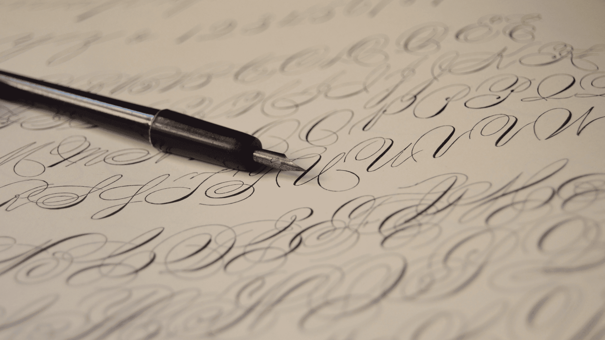
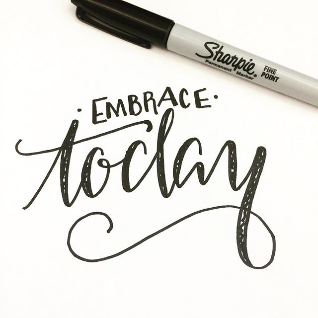
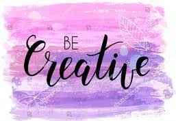
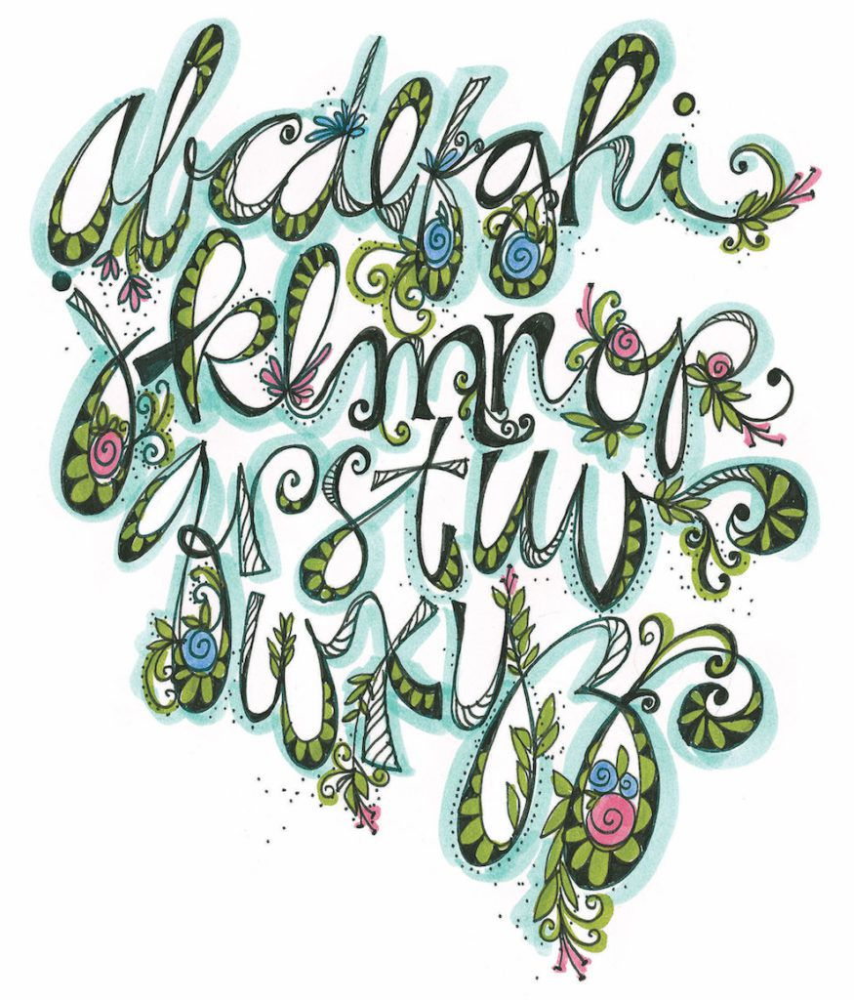
In principle, when you’re hand lettering you can do pretty much anything that helps you create artistic designs with letters. But to make sure you get beautiful results, it‘s important to observe a few specific rules. It’s practice that makes perfect and lettering is all about practice, especially when you’re just starting out. That’s why we’re giving you a few tips for beginners – rules you should follow right from the start:
Tools and Materials
Before you embark on your hand lettering journey, it's essential to gather the right things:
Hand Lettering calligraphy requires:
The right environment:
make sure that you always have enough space and light! A well-lit and tidy desk will get your creative juices flowing and help you practise for longer.
Posture:
Posture: since you’ll be needing to do a lot of practice, particularly at the start, it’s important that you cultivate a good posture right from the beginning. Sitting up straight not only prevents unnecessary back pain, it will also help you maintain the right distance from your paper and ensure you have an overview of your hand lettering.
How You Hold Your Pen Or Pencil
get used straight away to holding your pen or pencil between your thumb and forefinger, and to keeping the point at some distance (about a finger’s width) between the point and your fingers. This way you will prevent your fingers from cramping too quickly and ensure you have enough control.
Basic equipment for creating phrases
1. Coated paper:
your hand lettering pencils, fineliners and markers will always perform best on coated paper. A smooth surface allows your pencil to glide fluidly and makes it easier to draw straight and precise lines. We recommend that you use coated paper for printing, even when you’re printing out practice sheets from our downloads section.
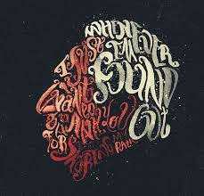
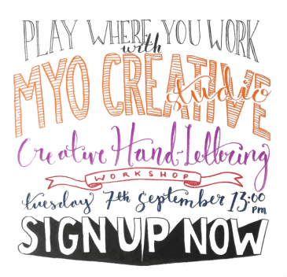
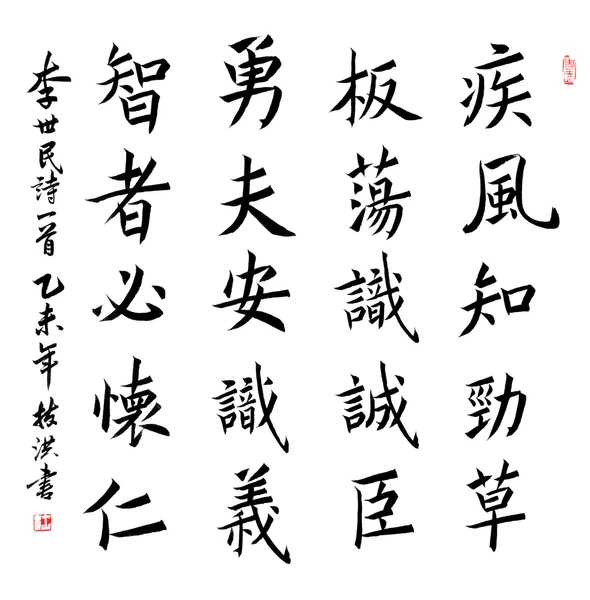
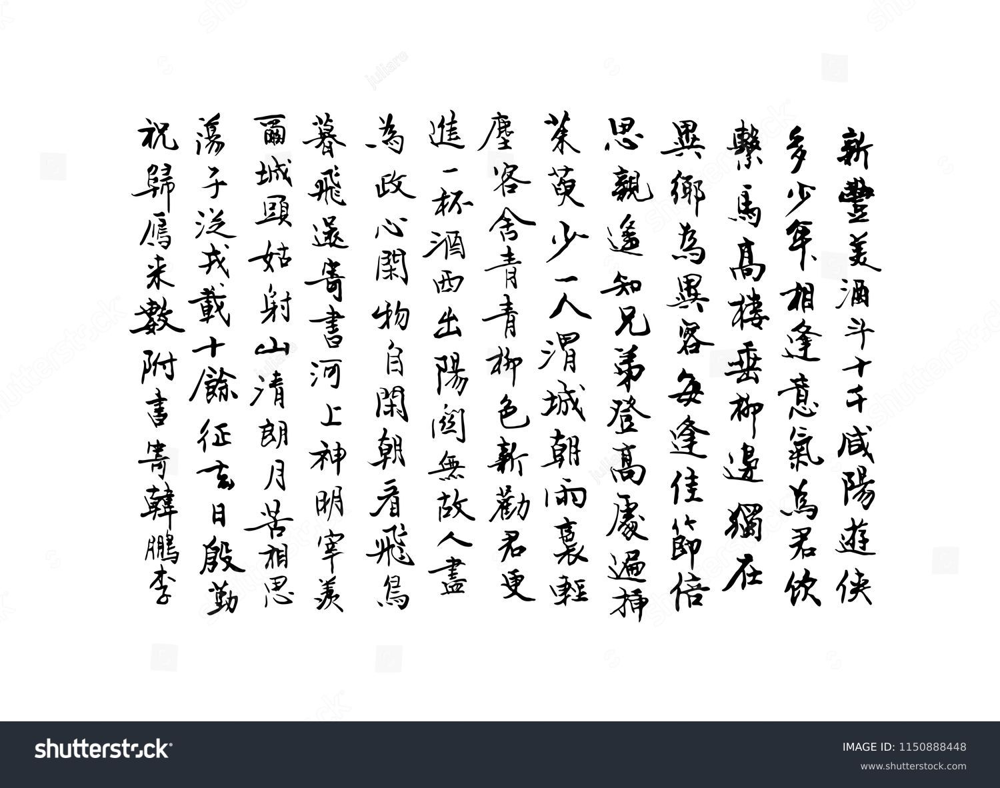
2.Geometry set square and ruler (Mars geometry set square 568 36 / Aluminium ruler 30cm 563 30):
a geometry set square and/or ruler will help you draw in guide lines and grids, to ensure that your phrase looks straight and symmetrical.
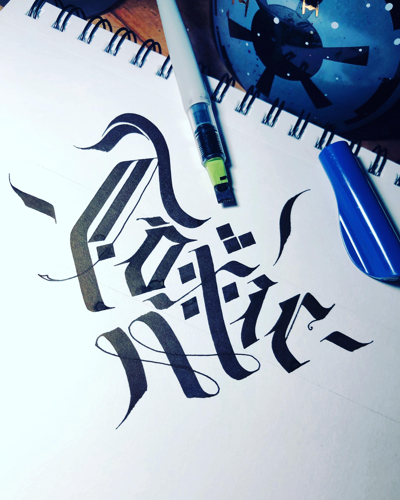
3.Pencil (Mars Lumograph 100 HB pencil for drawing and sketching):
an HB pencil is the right hardness grade sketching your phrase. Take care not to press too hard when you’re sketching, so that you don’t leave unsightly pressure marks behind when you rub out your sketch lines.
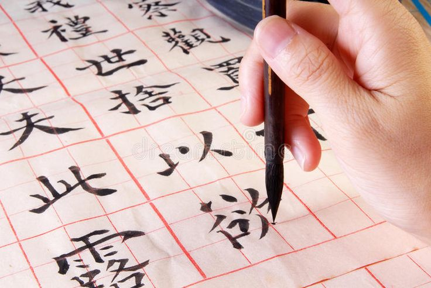
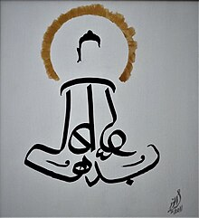
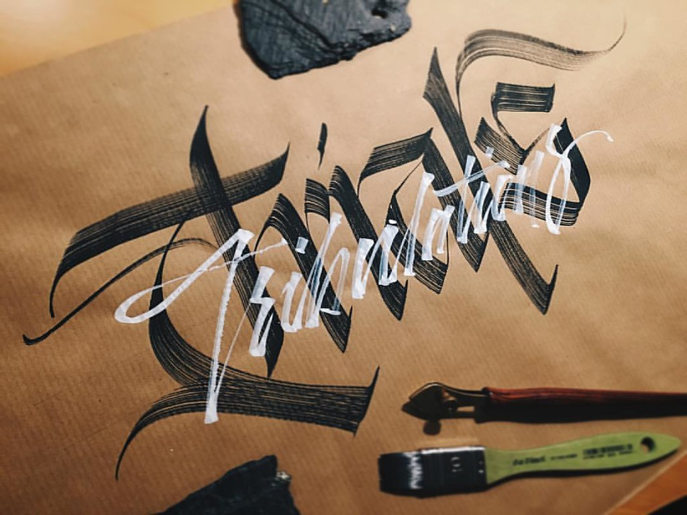